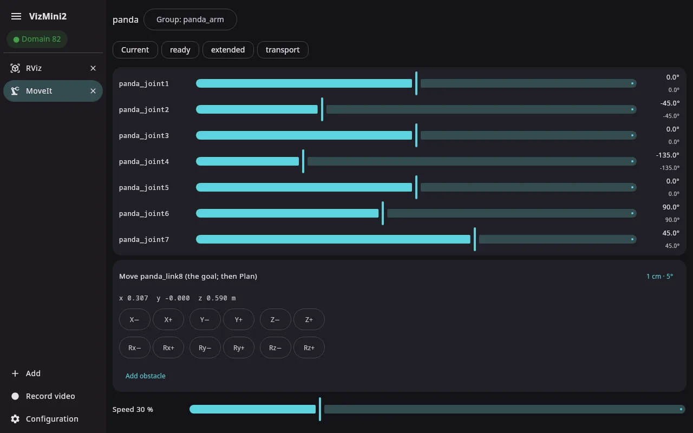

Move an arm with MoveIt
Goal: plan and execute motions of a robot arm from the phone or the PC, as with RViz’s MotionPlanning panel. Fifteen minutes with MoveIt’s Panda demo on a PC.

On a PC with ROS 2, start the Panda demo (
sudo apt install ros-$ROS_DISTRO-moveit-resources-panda-moveit-configif you don’t have it):ros2 launch moveit_resources_panda_moveit_config demo.launch.py
Any robot with
move_groupworks the same; close RViz if you like, it is not needed.In VizMini2, connect to the same domain (Connect to your robot) and add a MoveIt tab with + (or the ready-made Manipulation (MoveIt) dashboard, which also has a 3D view with the planned trajectory). It reads the robot and its planning groups from
move_group; choose panda_arm in Group.Tap the named pose ready or extended: the sliders move to the goal. Tap Plan: the status line says how long the motion takes and, with a Trajectory display in an RViz tab, a ghost arm plays it. Then Execute (or Plan & execute in one step).
Move a single joint with its slider, or the gripper with the X± Y± Z± and Rx± Ry± Rz± buttons (MoveIt solves the joints; the step is shown on the right), and plan again. Speed scales the motion.
Tick Straight line to move the gripper along a straight Cartesian path; if only part of it is possible, the app says how much.
Tap Add obstacle: a box appears between the gripper and the goal, and the next plan goes around it (a Planning scene display shows it in 3D). Remove obstacles takes them away.
Stop cancels a motion at any time.
Under More options… you choose the planner (OMPL, Pilz, CHOMP: whatever move_group
offers), the planning time, the move_group namespace and the MoveIt message version (detected by
itself). The tab is described in MoveIt.
Next: the same demo runs ros2_control, so you can also try Switch and command ros2_control controllers.